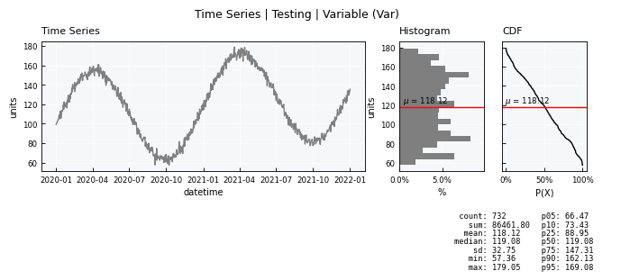
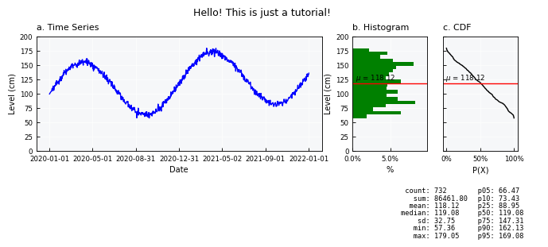
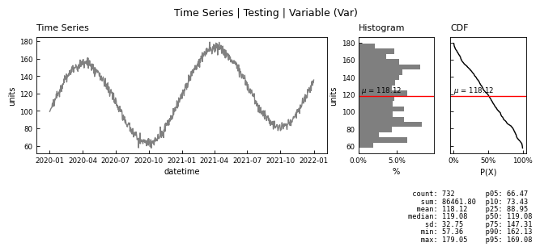
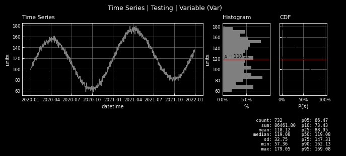
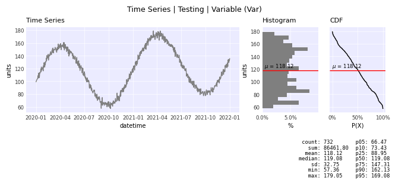
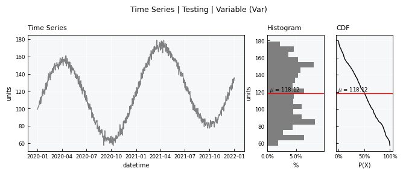
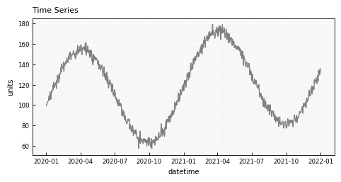

Visualizations - the basics#
This tutorial focuses on working with general principles of visualizations in plans.
Notebook setup#
For users running this tutorial as a Jupyter Notebook, this cell must be executed first:
import sys
from pathlib import Path
import pprint
import numpy as np
import pandas as pd
import matplotlib.pyplot as plt
# Install `plans` in `google.colab`.
# Use `pip install plans` for other environments.
if "google.colab" in sys.modules:
import os
os.system(f"{sys.executable} -m pip install -q plans")
# This avoids warnings related to uninstalled fonts
import logging
# Set the matplotlib font manager logger to only show errors (hides warnings)
logging.getLogger('matplotlib.font_manager').setLevel(logging.ERROR)
# define output folder
OUTPUT_DIR = Path("outputs/visualizations")
OUTPUT_DIR.mkdir(parents=True, exist_ok=True)
print(f"Outputs will be saved to: ./{OUTPUT_DIR}")
Outputs will be saved to: ./outputs/visualizations
Data setup#
The cell bellow creates a synthetic time series and loads it to a plans.datasets.TimeSeries object.
See also
Check out more about TimeSeries on the Time series data - the basics tutorial.
from plans.datasets import TimeSeries
# make synthetic TSN (Trend-Seasonality-Noise) time-series
df = TimeSeries.make_synthetic_tsn(
start="2020-01-01",
end="2022-01-01",
base=100,
freq="D",
trend=0.05,
noise_sd=3.0,
amplitude=50,
seasonal_period="YS",
minor_amplitude=20,
minor_seasonal_period="D"
)
# Export CSV file
file_csv = OUTPUT_DIR / "time_series.csv"
df.to_csv(file_csv, sep=";", index="False")
print(f"Saved to: {file_csv}")
# Set the ts variable
ts = TimeSeries(name="Testing", alias="tst")
# Load data from CSV
ts.load_data(
file_data=file_csv, # file path
input_dtfield="datetime", # name of datetime field
input_varfield="level", # name of variable
in_sep=";", # input separator
)
Saved to: outputs/visualizations/time_series.csv
Standard visualization#
Get the standard visual using the .view() method
ts.view()

Fine-tuning#
Fine-tune the visualization by editing the .view_specs attribute dictionary
# color of the main line
ts.view_specs["color"] = "blue"
ts.view_specs["color_hist"] = "green"
# Labels
ts.view_specs["ylabel"] = f"Level (cm)"
ts.view_specs["xlabel"] = "Date"
# Titles
ts.view_specs["title"] = "Hello! This is just a tutorial!"
ts.view_specs["subtitle_data"] = "a. Time Series"
ts.view_specs["subtitle_hist"] = "b. Histogram"
ts.view_specs["subtitle_cdf"] = "c. CDF"
# Data Y Axis range
ts.view_specs["range"] = [0, 200.0]
# Number of dates in the X axis (TimeSeries only)
ts.view_specs["n_dates"] = 7
# Call view() again
ts.view()

List all view specs keys for the current object:
pprint.pp(ts.view_specs.keys())
dict_keys(['style', 'gs_wspace', 'gs_hspace', 'gs_left', 'gs_right', 'gs_bottom', 'gs_top', 'folder', 'filename', 'fig_format', 'dpi', 'title', 'xvar', 'yvar', 'xlabel', 'ylabel', 'color', 'xmin', 'xmax', 'ymin', 'ymax', 'layout', 'subtitle_data', 'subtitle_hist', 'subtitle_cdf', 'yvar_field', 'xlabel_cdf', 'data_label', 'data_legend', 'color_hist', 'color_cdf', 'color_mean', 'color_mean_text', 'scheme_cmap', 'cmap', 'alpha', 'alpha_hist', 'alpha_cdf', 'range', 'range_x', 'plot_mean', 'plot_mean_data', 'linestyle_mean', 'pad_mean', 'plot_mean_label', 'hist_density', 'bins', 'bins_density', 'ax_data', 'ax_hist', 'ax_cdf', 'x_stats', 'x_stats_sep', 'y_stats', 'zorder_data', 'zorder_histh', 'zorder_cdf', 'scatter_factor', 'colorize_scatter', 'color_aux', 'color_fill', 'color_eva', 'legend_eva', 'alpha_aux', 'alpha_fill', 'fill', 'fill_only', 'xmax_aux', 'linestyle', 'marker', 'marker_eva', 'drawstyle', 'n_bins', 'n_dates', 'include_eva'])
Reset view specs to default values:
ts._set_view_specs()
Save to image file#
Save to an image file the visual by setting show=False. This will save in the same folder of the data with a standard name.
ts.view(show=False)
A custom image export can be achieved by changing the folder, filename, and fig_format parameters of the .view_specs
ts.view_specs["folder"] = OUTPUT_DIR
ts.view_specs["filename"] = "Testing - blue - 2"
ts.view_specs["fig_format"] = "jpeg" # instead of jpg
ts.view(show=False)
Visual style#
The visual overall style can be switched via the style key. The default style is wien.
List all available styles:
from plans.viewer import FIG_STYLES
pprint.pp(FIG_STYLES.keys())
dict_keys(['bare', 'wien', 'wien3d', 'wien-light', 'wien-clean', 'seaborn', 'dark'])
ts.view_specs["style"] = "wien-light"
ts.view()
ts.view_specs["style"] = "wien-clean"
ts.view()

ts.view_specs["style"] = "dark"
ts.view()

ts.view_specs["style"] = "seaborn"
ts.view()

ts.view_specs["style"] = "bare"
ts.view()
# reset view specs
ts._set_view_specs()
Visual layout#
The visual layout mode can be changed via the mode key. The default mode is full.
Warning
Layout options can vary according to the object
ts.view_specs["layout"] = "full"
ts.view()
ts.view_specs["layout"] = "mini"
ts.view()

ts.view_specs["layout"] = "simple"
ts.view()
